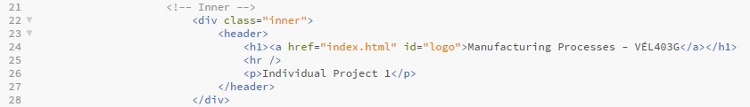
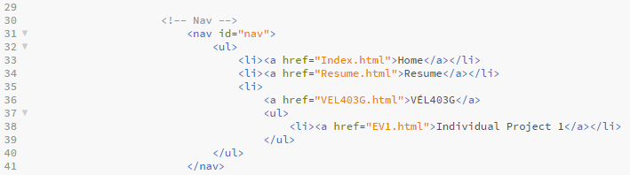

In this project the objective is to either choose or make a HTML template for a website. Organize the website and put information from your resume. Record the first project and upload it to Github using Git bash. My github repository can be accessed here.
In preparation for this project, I started by watching instructional videos provided by the course instructor. Then I proceeded to research the subject online along side experimenting with HTML using the website w3schools. While setting up the website I used w3schools to find and add new features to the website.
This is my first time using HTML and therefore I decided to use a template from HTML5up. I choose the template
Helios.
For this project I choose to use Brackets, Github and Git. I have previous experience using Git but this is my first time using Brackets.
Brackets is a modern text editor with focus on visual tools and preprocessor support. Brackets primary focus is on web development and makes it easy to design web pages in the browser. This is because of its live HTML, CSS and JavaScript editing functions. Brackets is a free and open-source project written in JavaScript, HTML and CSS created by Adobe Systems. Brackets is currently maintained on GitHub by Adobe and other open-source developers.
Git is a system for tracking change in any set of files. It was originally designed for coordinated work among programmers. Its goals include speed, data integrity, and support for distributing non-linear workflows.
Github is a repository hosting service, which provides a wed-based graphical interface.
By using a template I have a good structure for the website but I choose to remove some of the features to simplify the design. My goal is to design a website that is easy to navigate and contains all of the information required for this course.
Early on I decided on the layout of the website and once that was decided I created a page containing my resume, specifically the resume I created when applying for masters programs.
Every page contains a Header with a title for the page, a short description of its content and a navigation bar. The title of the pages and description differs by tabs but I decided to keep the navigation bar the same in all tabs. An example of a title and description can be seen below:

To navigate the website I created a bar at the top of the page. On the navigation bar I had links to the pages Home, Resume and VÉL403G. VÉL403G contains a dropdown menu with a link to Individual Project 1. As the course progresses, I plan on adding more tabs to VÉL403G. The code for the navigation bar can be seen below:

Then I inserted all of the information from my resume to the “Resume” page and organized it. I divided the information into 5 groups, intro, work experience, education and training, language skills and digital skills. The information was separated by using headlines. Below I will show how this was done:
The page "VÉL403G"and "individual Project 1" was created in a similar way.
Preparation
Tools
How to access tools
Making the website

Search engine keywords
HTML5, HTML5 up, Github, Git